Tournament Directors
June-Ho and Linus oversee all aspects of the invitational as tournament directors.
-
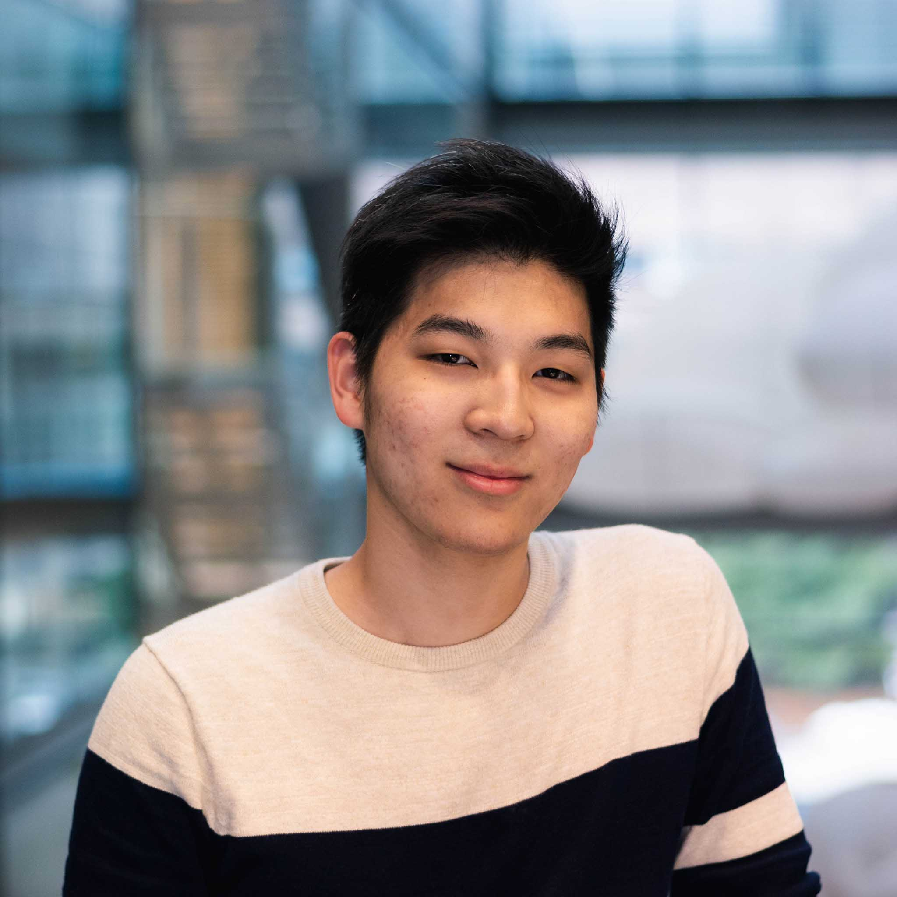June-Ho Park '20DirectorJune Ho is a junior majoring in Computer Science from Orange County, California. Although he didn't compete in Science Olympiad in high school, he did compete in Chemistry Olympiad (earned top 152 honors on the 2016 USNCO) and enjoyed supervising one of the events at last year's invitational. He is excited to serve as co-director this year! Outside of schoolwork and Science Olympiad, June enjoys painting, photography, and video games.
-
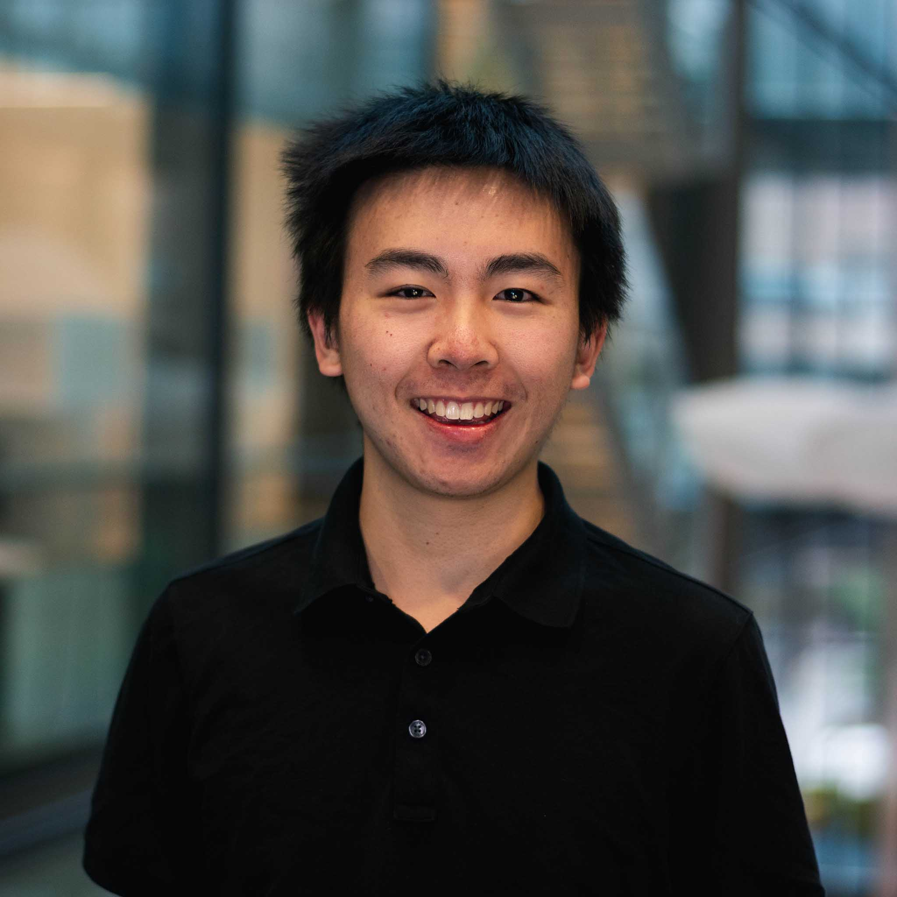Linus Wang '21DirectorLinus is a sophomore from Palo Alto, California who is majoring in Mechanical and Aerospace Engineering. Linus has participated in Science Olympiad for two years where his favorite events are ID events or anything with a binder. In his spare time, Linus likes playing pool, super smash bros, and practicing the French horn. He looks forward to directing this year and hopes to help run an awesome tournament!
Content Committee
The Content Committee is responsible for revising all tests for content, difficulty spread, relevancy, and scorability, as well as working with event supervisors to ensure that all events have the needed materials and setups.
-
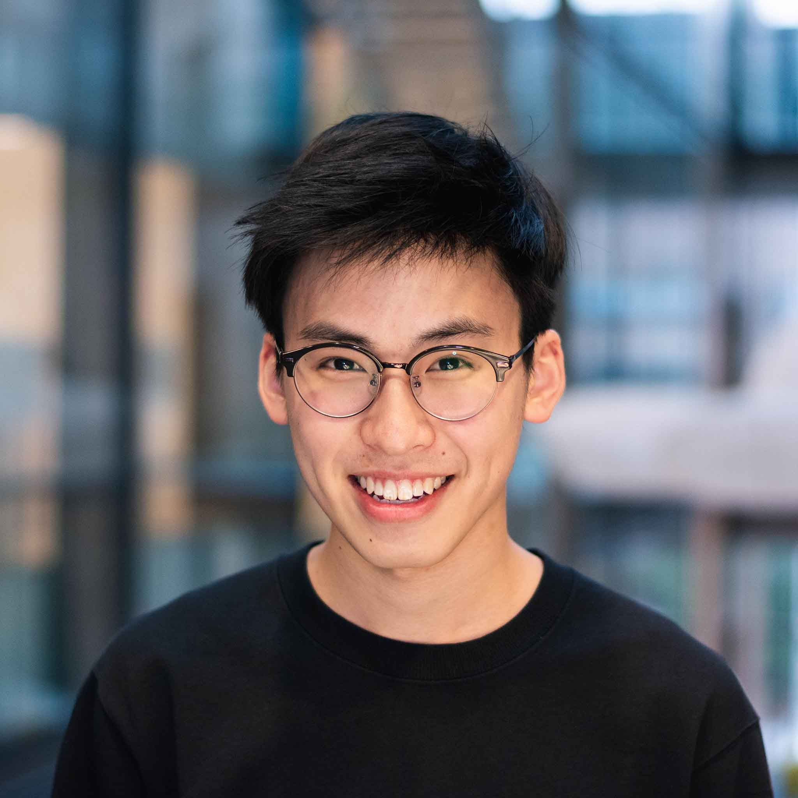Jonathan Wang '21DirectorJonathan is a sophomore from Solon, Ohio who's deciding between the COS and MOL departments. After 6 years in middle and high school Science Olympiad, he's excited to give others the chance to push the limits of how small their font size can get or how many times they can superglue their fingers together. Outside of PUSO, he is a part of Finding the Match, Manna, and Six14 Dance Company, but his real passion is eating. Sometimes forgetting he's a student, his day mostly goes from one nap to the next.
-
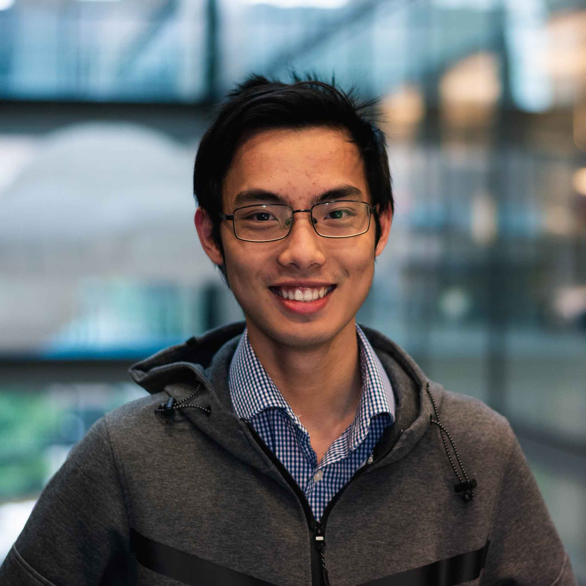Cam On '20Biology EventsCam is junior from Bethesda, MD currently majoring in Ecology and Evolutionary Biology. Cam started Science Olympiad in middle school and viewed his teammates as part of his own family. He enjoys early morning walks through the woods despite plagued with terrible pollen allergies.
-
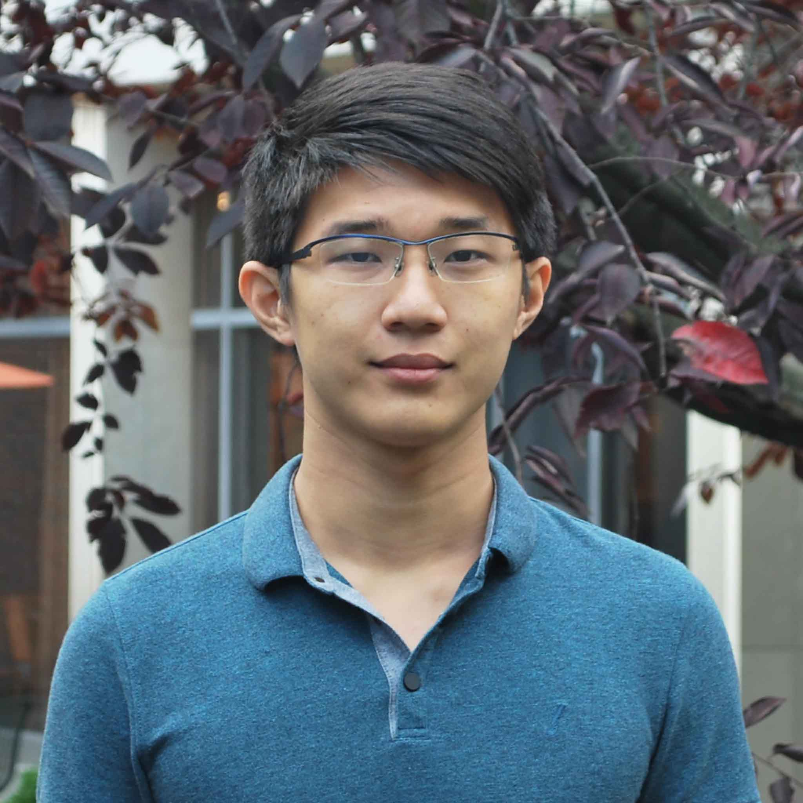Bingjian Li '22Chemistry EventsBingjian is a freshman from Singapore majoring in Operations Research and Financial Engineering. He competed in the International Chemistry Olympiad in 2015 and was ranked overall 8th. Always excited to share his passion for chemistry with anyone, he also organized the chemistry events at a Science Olympiad held by his high school. In his free time, Bingjian enjoys cycling, taking walks around campus and playing Avalon with friends.
-
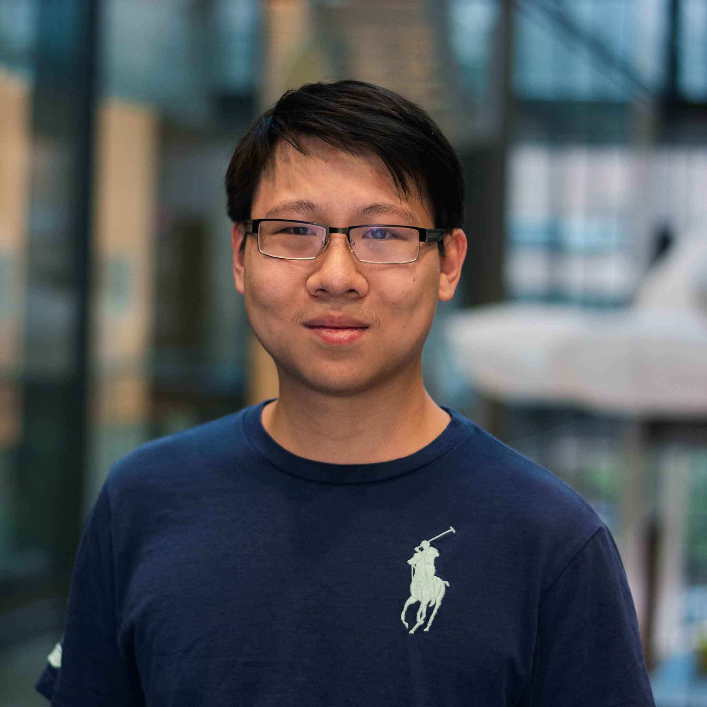Andy Xu '22Earth Science EventsAndy is a freshman from Sugar Land, Texas majoring in MAE. He competed for William P. Clements HS for 4 years in all the earth science events. Wohoo go earth science! He also competed at the 2018 International Earth Science Olympiad and won gold with the second highest overall score. In his free time, Andy enjoys fossil and mineral hunting, watching Formula 1, and being a rock (aka napping his life away). His Scioly tag is AWildMudkip if you ever have any questions!
-
Seth Lovelace '20Build EventsSeth is a junior from New Orleans, Louisiana, majoring in Mathematics. As such, he has always been interested in how numbers, patterns, and proofs worked. Prior to Princeton, Seth participated heavily in Science Olympiad and led his team as the head of builds and events. Science Olympiad was a wonderful experience for him, and as such he looks forward to giving back to the community by helping run Princeton's Science Olympiad Invitational this year! Some of Seth's other interests on campus include Ballroom dancing and Taiko drumming, and one can often find him practicing these on a typical day. Outside of school, Seth like to go hiking in National Parks, play chess both casually and competitively, and read books, novels, and plays.
-
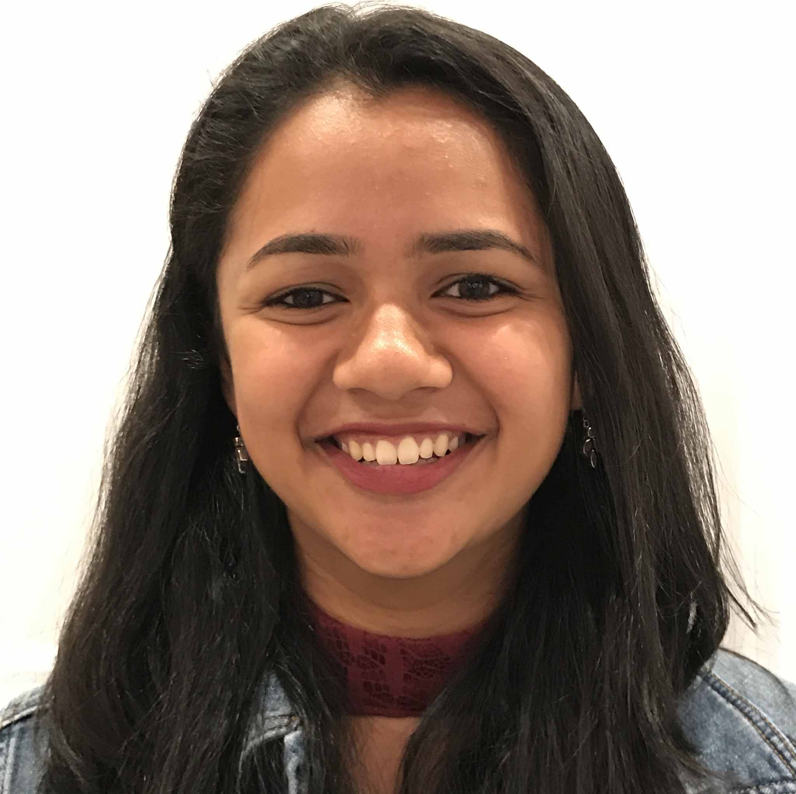Gargi Sadalgekar '21Build EventsGargi is a sophomore in the MAE department from East Windsor, NJ. Although she hasn't participated in Science Olympiad before, she is excited to be helping run Princeton's Invitational. Aside from Science Olympiad, Gargi spends her time working for the tech center and coaching a FIRST Robotics team. She enjoys reading, baking, eating, and sleeping whenever possible.
Finance Committee
The Finance Committee is responsible for landing academic department/company sponsorships and ordering and tracking expenses.
-
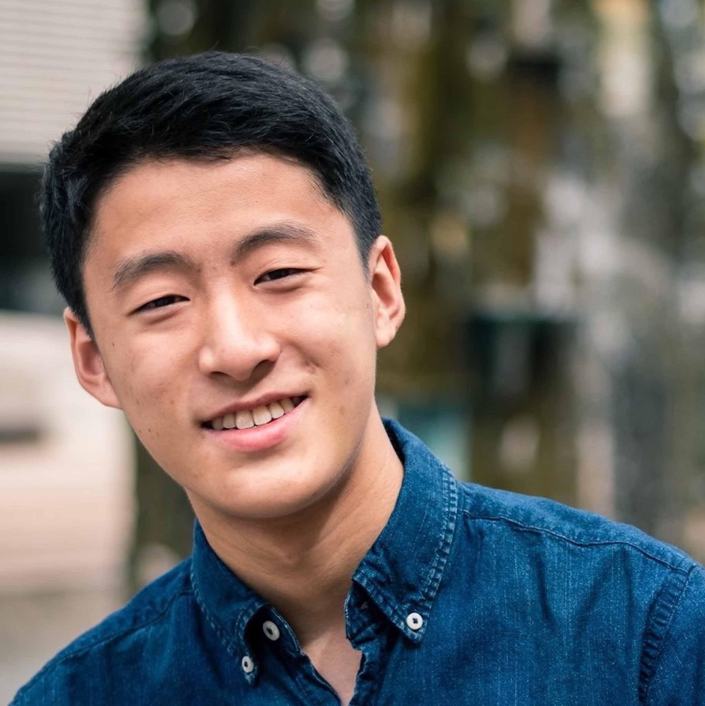Ben Liang '20DirectorBen is a CBE dropout from Scotch Plains, New Jersey. Nowadays he dabbles in Operations Research and Financial Engineering, whatever that really means. Not a Science Olympiad alum from Union County Magnet High School, Ben has no awards, honors, or contributions worth noting. Nonetheless, Ben is excited to be Microsoft Excel-In-Chief this year!
-
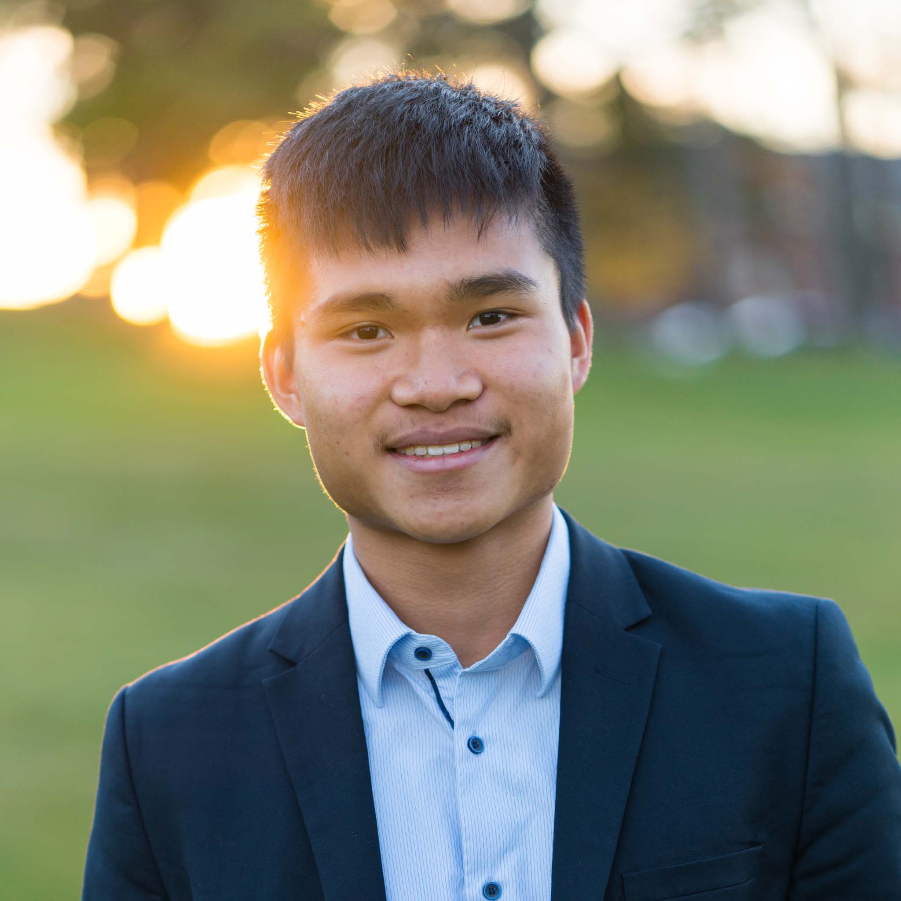Alan Wong '21Alan is a sophomore from Hong Kong who went to high school in Connecticut, where he competed in Science Olympiad throughout high school. As the head of his high school team, he led his team to CT states and the Yale Invitational, participating in a variety of individual and group events. Aside from Science Olympiad, Alan enjoys playing soccer, ultimate frisbee, and the piano.
-
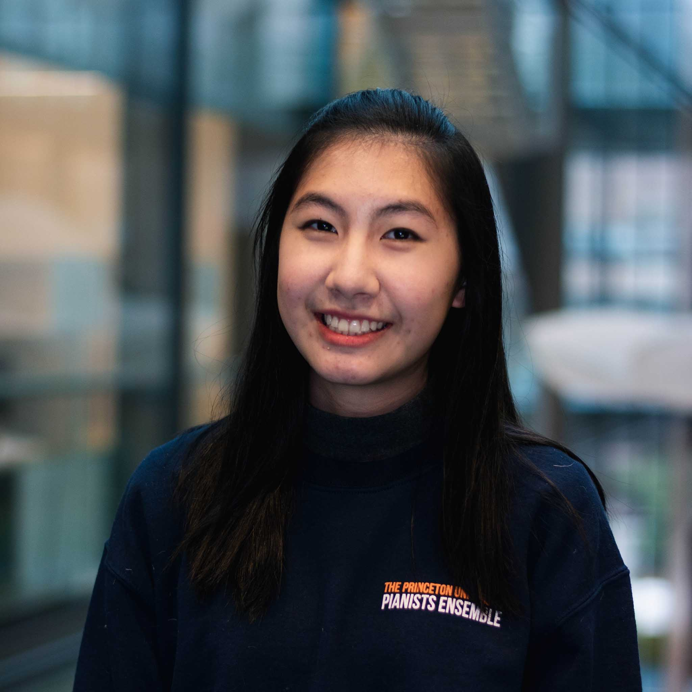Grace Wei '22Grace is a freshman from Johns Creek, Georgia. She is probably going to major in CBE, although she often talks about switching to COS. Grace competed in Science Olympiad in high school, her favorite events being Forensics, Chem Lab, and Materials Science. In her free time, Grace likes to watch Korean dramas, Netflix, and anime, eat ramen, and nap.
-
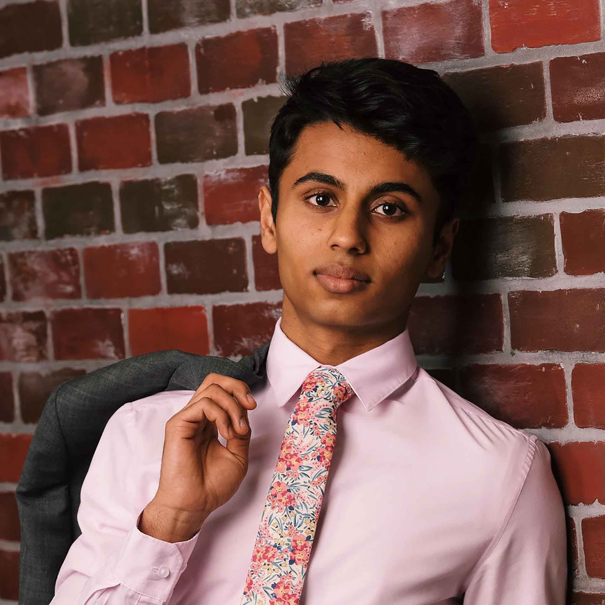Pranav Iyer '22
Logistics Committee
The Logistics Committee is responsible for ensuring that all logistical aspects of the competition run smoothly, from team check-in to the event schedule, food, t-shirts, room allocation, event materials, awards, grading, volunteer recruitment, etc.
-
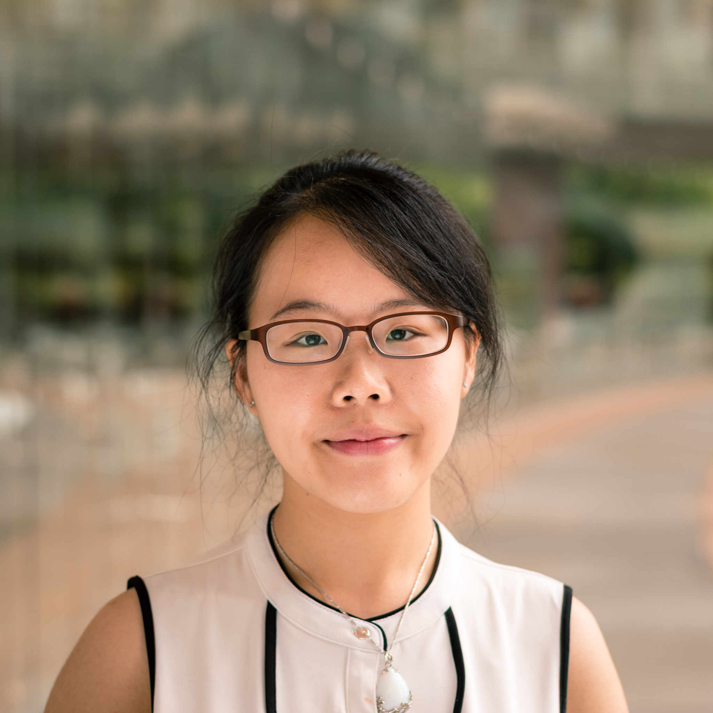Hoi-Lam Lau '21DirectorHoi is a sophomore from Brooklyn, New York, but has also lived in Hong Kong for ten years. She is a prospective chemistry major and is obsessed with conducting experiments in the kitchen (a.k.a. cooking). She competed with the Stuyvesant High School Science Olympiad team for two years and absolutely loved the experience. She is enthusiastic about working with the talented board and meeting fellow science lovers during the upcoming Invitational! If not in class, Hoi is most commonly found chasing squirrels on the lawns, wandering around Wilcox, and struggling to run up the Washington Road slope.
-
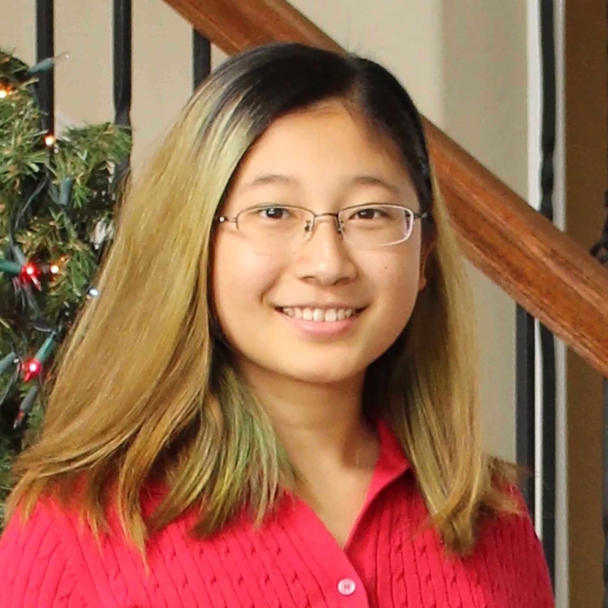Claire Dong '21Claire is a sophomore from Richmond, Texas, and is majoring in Electrical Engineering. She competed with the William P. Clements High School team throughout high school, and is excited to now work on the organizational side of the competition (although she misses the adrenaline rush of sprinting to events). In her free time, Claire enjoys fencing, creating papercutting, and reading fantasy books.
-
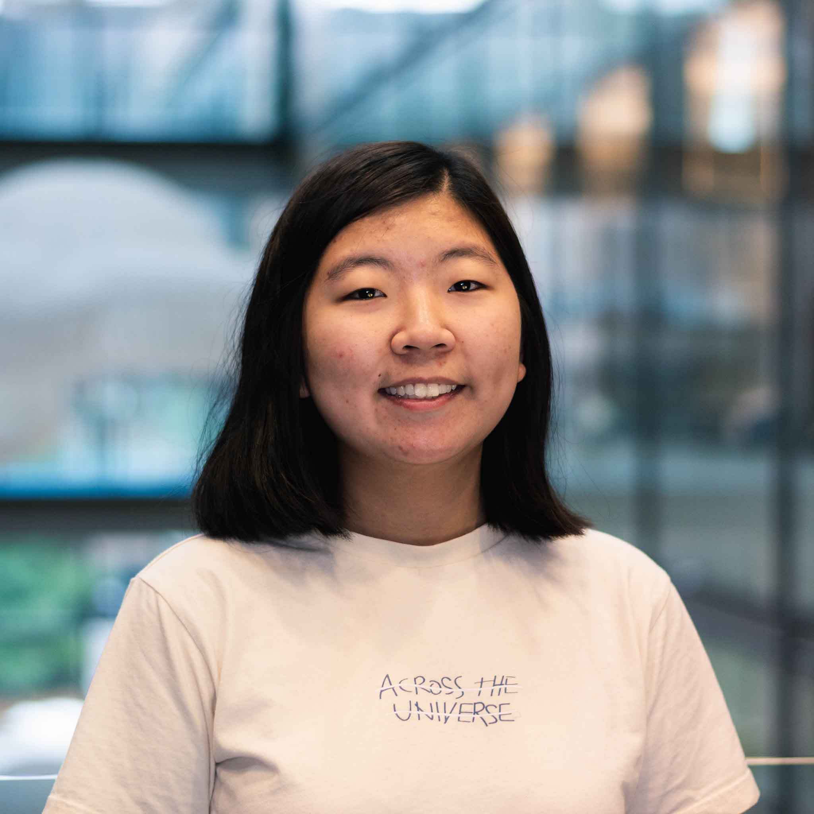Jae Won Oh '21Jae Won is a Chemical and Biological Engineering major from Fairfax, Virginia. She participated in Science Olympiad for all four years during high school, and some of her favorite events include Wind Power, Protein Modeling, Invasive Species, and Chemistry Lab. During her free time, Jae Won loves to read, solve Rubik's cubes, and nap. After supervising Write It Do It last year, she's happy to be on the team helping run the tournament. Feel free to ask her about Princeton or anything else if you see her around!
-
 Nicole Meister '22Nicole is freshman from Ellicott City, Maryland majoring in COS or ELE. She competed in Science Olympiad for 4 years in high school, especially enjoying events such as Forensics, Optics, and Remote Sensing. Nicole is extremely passionate about STEM education and is excited to be involved in organizing this tournament! In her free time, Nicole enjoys asking others about the word "yeet" and entertaining wild conspiracy theories.
Nicole Meister '22Nicole is freshman from Ellicott City, Maryland majoring in COS or ELE. She competed in Science Olympiad for 4 years in high school, especially enjoying events such as Forensics, Optics, and Remote Sensing. Nicole is extremely passionate about STEM education and is excited to be involved in organizing this tournament! In her free time, Nicole enjoys asking others about the word "yeet" and entertaining wild conspiracy theories.
Outreach Committee
The Outreach Committee is responsible for promoting STEM education and Science Olympiad accessibility in the Princeton area by supporting local Science Olympiad teams and sending volunteers to state competitions.
-
 Colton Casto '21DirectorColton is a sophomore from Wilmington, NC majoring in Neuroscience on the premed track. Unfortunately, Colton could not compete in Science Olympiad when he was in high school, but he is excited to help organize the competition this year. Outside of SciOly, Colton enjoys singing in the Glee Club, giving campus tours, and doing neuroscience research. On weekends, Colton likes to take walks around campus, play pool with his friends, and search for cheap food late at night.
Colton Casto '21DirectorColton is a sophomore from Wilmington, NC majoring in Neuroscience on the premed track. Unfortunately, Colton could not compete in Science Olympiad when he was in high school, but he is excited to help organize the competition this year. Outside of SciOly, Colton enjoys singing in the Glee Club, giving campus tours, and doing neuroscience research. On weekends, Colton likes to take walks around campus, play pool with his friends, and search for cheap food late at night.
-
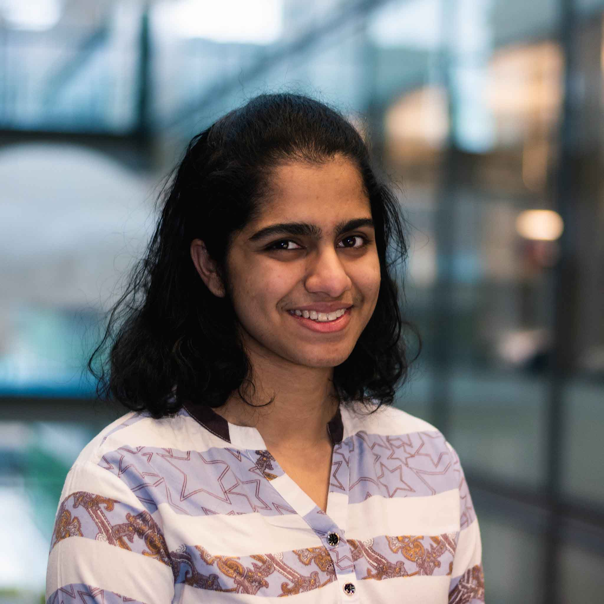Chythanya Murali '22Chy is a freshman from Ellicott City, Maryland, and is not quite sure what she wants to major in just yet. She competed in Science Olympiad for 6 years with her favorite events being Anatomy, Protein Modeling, and Microbe Mission. In her free time she enjoys calligraphy and eating jalapeno chips. Fun fact: She and Nicole were co-captains for the same Science Olympiad team in high school!
Communications Committee
The Communications Committee is responsible for managing outreach to teams via email and social media, as well as liasoning with administration and students on campus to ensure that all parties are up-to-date about tournament preparations.
-
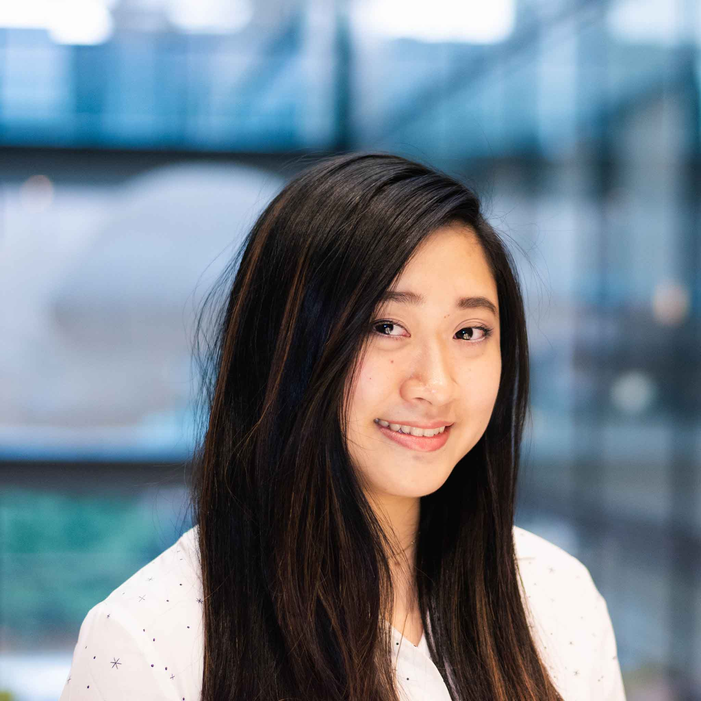Diana Tang '21DirectorDiana is a member of the Princeton Class of 2021 and a prospective Woodrow Wilson or Linguistics major after realizing that she can't do computer science (definitely a certificate in Spanish though!). She participated in Science Olympiad throughout middle and high school and is excited to be a part of running this invitational again! Diana is also involved in the PMUNC, Manna, and Six14 Dance. When she's not working her butt off, you can find her wandering aimlessly on Nassau with a Starbucks frap in hand or just...taking a nap.
-
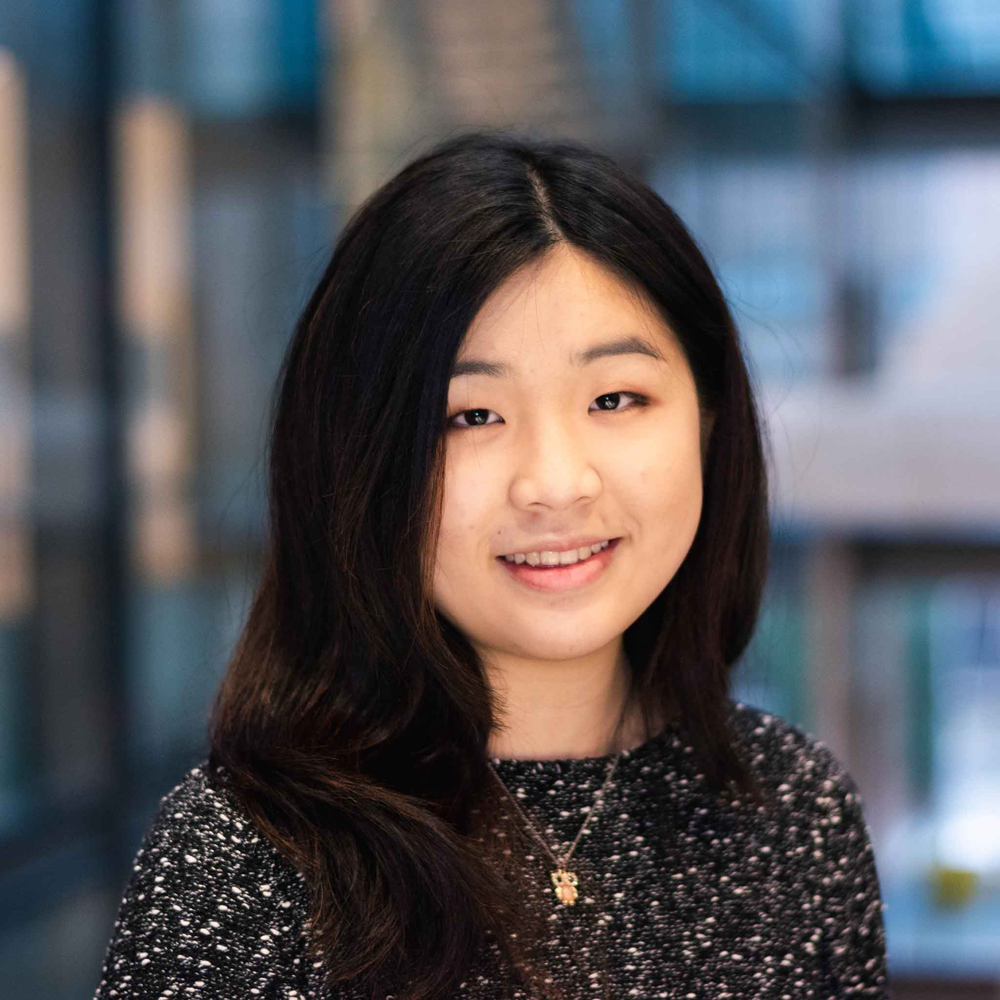Annie Zou '20DirectorAnnie is a junior computer science major from Columbus, Ohio. After four years of Science Olympiad in high school, she’s excited for her second year on the coordinating side of the competition! Outside of PUSO, she’s involved in the Daily Princetonian, HackPrinceton, and the Princeton University Orchestra. Annie enjoys indie pop, oolong tea, and painting her comics with pastel colors & her friends’ Facebook notifications with cute animal videos. She’s always down for brunch but almost never up in time for her morning classes.
-
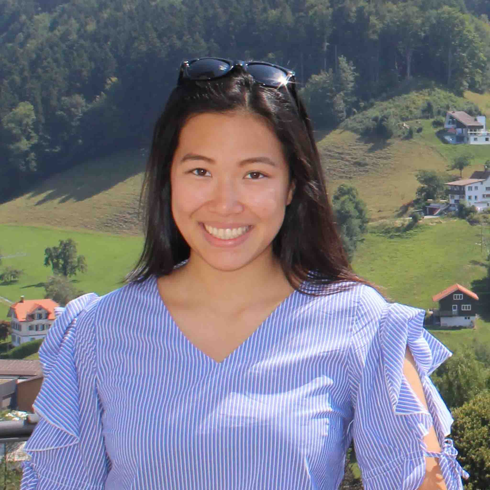Martha Yin '22Martha is a freshman majoring in Operations Research & Financial Engineering. She was born in Toronto, but grew up in Montgomery, Alabama, where she spent 6 years competing in Science Olympiad and falling in love with the activity. On campus, Martha is involved in PMUNC, E-Club, MANNA, and the crew team, and in her spare time, she loves trying restaurants on Nassau, watching Chinese dramas, and taking spontaneous trips to NYC.
Graphic Design Committee
The Graphics Design Committee is responsible for creating a theme and producing the artistic content for the year's competition.
-
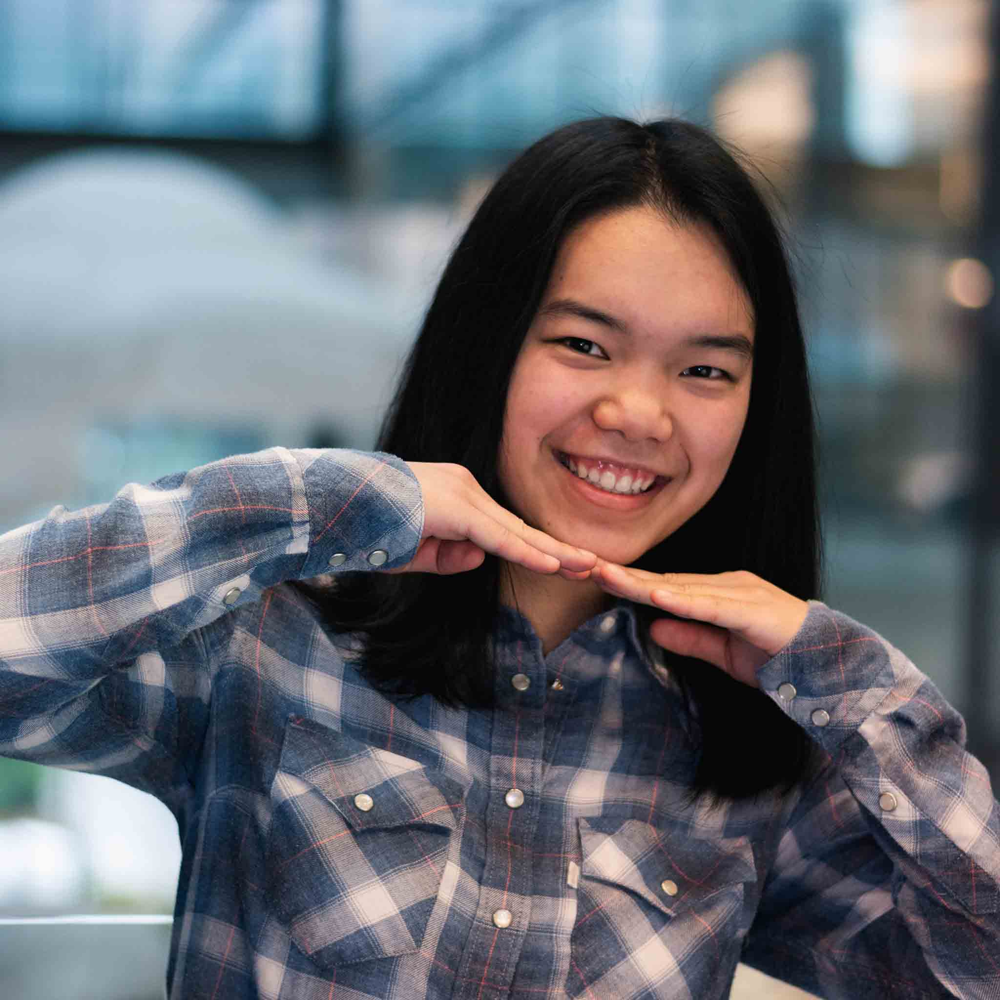Jessica Pan '21DirectorJessica is a sophomore from Morris Plains, New Jersey majoring in Computer Science. She was the co-founder of her high school's Science Olympiad Club and ran the club for three years. In her free time, Jessica enjoys playing badminton, drawing, drinking boba, and playing piano. She can also be found playing Clash Royale or MOBA games at 1 in the morning.
-
 Sanna Lee '20Sanna hailed from Brooklyn, NY before her family recently moved to New York City’s least favorite child– Staten Island. Refrain from asking Sanna about her current course schedule, but do ask her about her high school Science Olympiad experience, her cat Moomoo, and her mango allergy.
Sanna Lee '20Sanna hailed from Brooklyn, NY before her family recently moved to New York City’s least favorite child– Staten Island. Refrain from asking Sanna about her current course schedule, but do ask her about her high school Science Olympiad experience, her cat Moomoo, and her mango allergy.
-
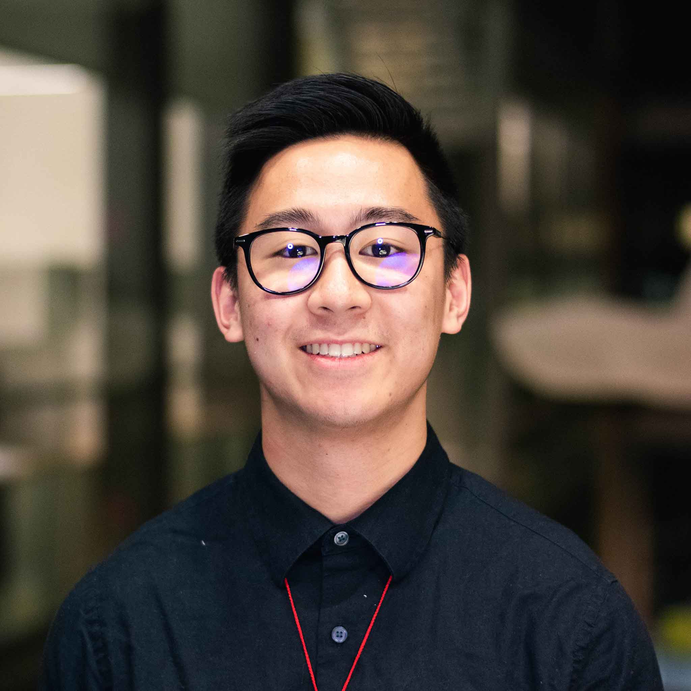Victor Guan '21Victor is a sophomore from New York planning to major in Sociology. Although he did well in STEM classes throughout middle and high school, there was no Science Olympiad in his district. He is excited to be a part of Princeton's very own invitational and work on the various designs set up for this year. His other interests include breakdancing in Sympoh, cartooning for the Daily Princetonian, and anything else art-related.
Webmaster
The Webmaster is responsible for keeping the website updated, addressing problems, and maintaining new tools that aid the team in running the tournament.
-
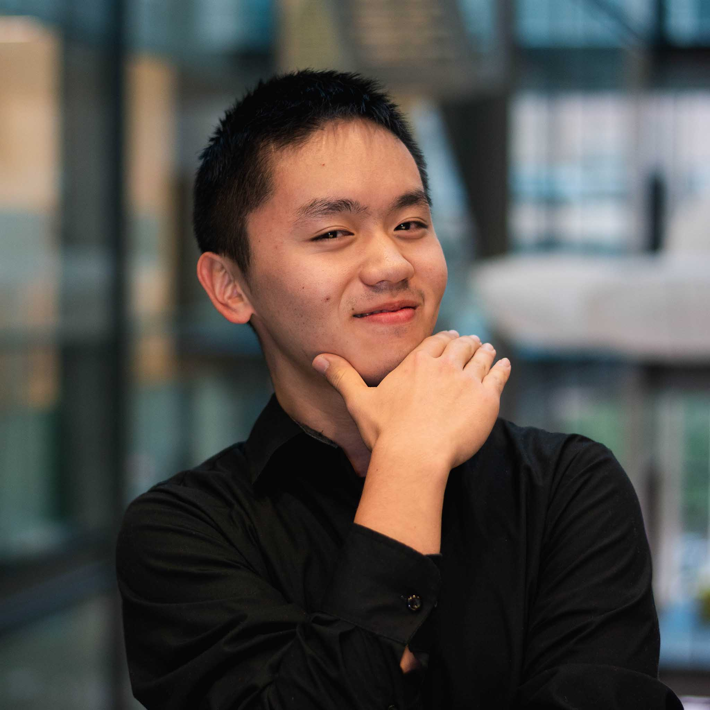William Li '21DirectorWilliam Li is a sophomore and BSE computer science major from Edison, New Jersey who competed on the JPS scioly team. On campus, he is also involved with other events such as PUMaC and HackPrinceton and enjoys playing sports such as ultimate frisbee and ping pong. He always appreciates free bubble tea, and if he has the time, he can be found playing cards and board games with his friends or playing Smash on his laptop.
Directors Emeriti
Thank you to our former directors for founding the club, directing their respective years, and continuing to stay and help us make it better each year.
-
 William Jiao '202018 DirectorWilliam is a junior math major and Science Olympiad alum from West Windsor-Plainsboro High School South. When he's not doing math or organizing tournaments, Will enjoys playing piano, reading philosophy, and figuring out how to pretend he's productive on bios when he actually just naps all the time. He hopes to hold a fun and successful invitational tournament this year!
William Jiao '202018 DirectorWilliam is a junior math major and Science Olympiad alum from West Windsor-Plainsboro High School South. When he's not doing math or organizing tournaments, Will enjoys playing piano, reading philosophy, and figuring out how to pretend he's productive on bios when he actually just naps all the time. He hopes to hold a fun and successful invitational tournament this year!
-
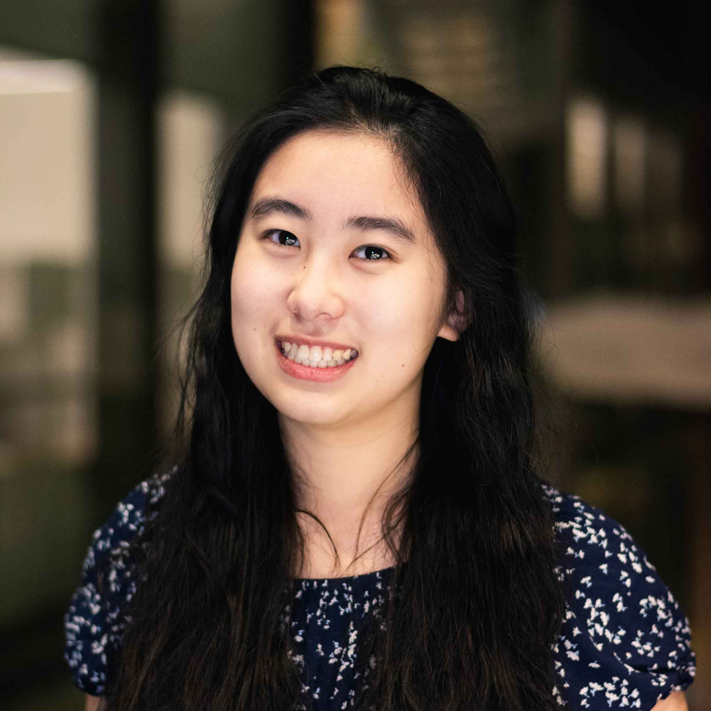Shirley Zhang '202018 DirectorShirley is a junior who originally hails from the sunny realm of Sydney, Australia, but has since gotten stuck with the eternal winters of Upstate New York. In high school, Shirley competed with the Fayetteville-Manlius Science Olympiad team, with whom she has fond memories of 1 AM build testing, 10 person human pyramids, and smashing whipped cream in peoples' faces. When not directing Science Olympiad, you can find Shirley making bubble tea runs and nursing her perpetually sprained ankles.
-
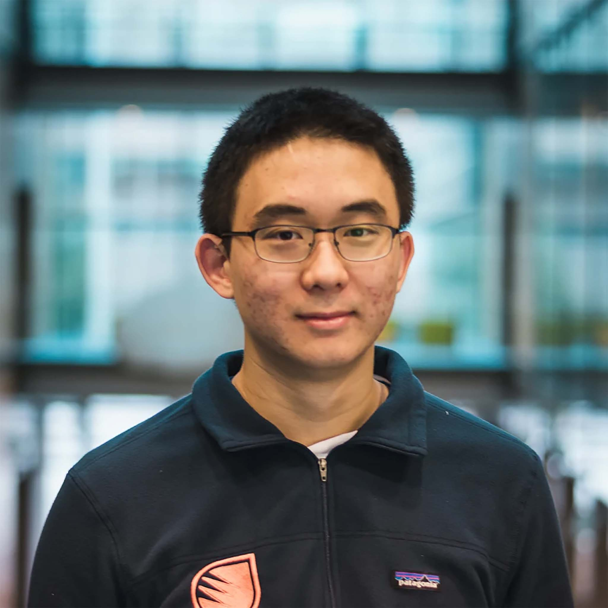David Fan '19Founder2017 DirectorDavid Fan is a senior from Montgomery High School majoring in Computer Science and minoring in Statistics + Machine Learning. He competed in Science Olympiad for six lovely years, and founded NJ's first invitational tournament while in high school. He has supervised events at many tournaments, and is passionate about contributing his experiences to raise the level of Science Olympiad tournaments nationwide. In Fall 2016, David co-founded and directed the first ever Princeton University Science Olympiad Invitational along with Eddie. This year, David is excited to advise Princeton University Science Olympiad in its third year, after a tremendously successful second year. On campus, David also advises HackPrinceton, plays club table tennis, and occasionally practices his clarinet...
-
 Edison Lee '19Founder2017 DirectorEddie Lee is a senior from West Windsor-Plainsboro North majoring in Chemistry. He competed in Science Olympiad for six years and led the WW-P North team to nationals during his senior year. His extensive experience competing in ecology-related events inspired a love of plants, and he now enjoys escaping to the outdoors. After starting and co-directing Princeton's inaugural invitational, he hopes to use his experience to help the newly expanded team run its best tournament yet!
Edison Lee '19Founder2017 DirectorEddie Lee is a senior from West Windsor-Plainsboro North majoring in Chemistry. He competed in Science Olympiad for six years and led the WW-P North team to nationals during his senior year. His extensive experience competing in ecology-related events inspired a love of plants, and he now enjoys escaping to the outdoors. After starting and co-directing Princeton's inaugural invitational, he hopes to use his experience to help the newly expanded team run its best tournament yet!
-
Reilly Bova '192018 Logistics DirectorReilly is a junior from Philadelphia, PA and a proud alumnus of the Harriton High School Science Olympiad team. Last year, Reilly served as the Logistics Director and the year prior he served as the Head Event Supervisor for Chemistry Lab. This year Reilly is taking a step back to serve in as an advisor to the logistics team and so that he can supervise Sounds of Music. Although he has no idea what he wants to do with his life, Reilly's passion for computer science has driven him to pursue a BSE COS degree, which he supplements with studies related to his other passions such as music, physics, and Latin. Outside of class, Reilly loves watching movies, conducting school ensembles, cooking great food, and — above all else — playing percussion in the fantastic Princeton University Orchestra!
-
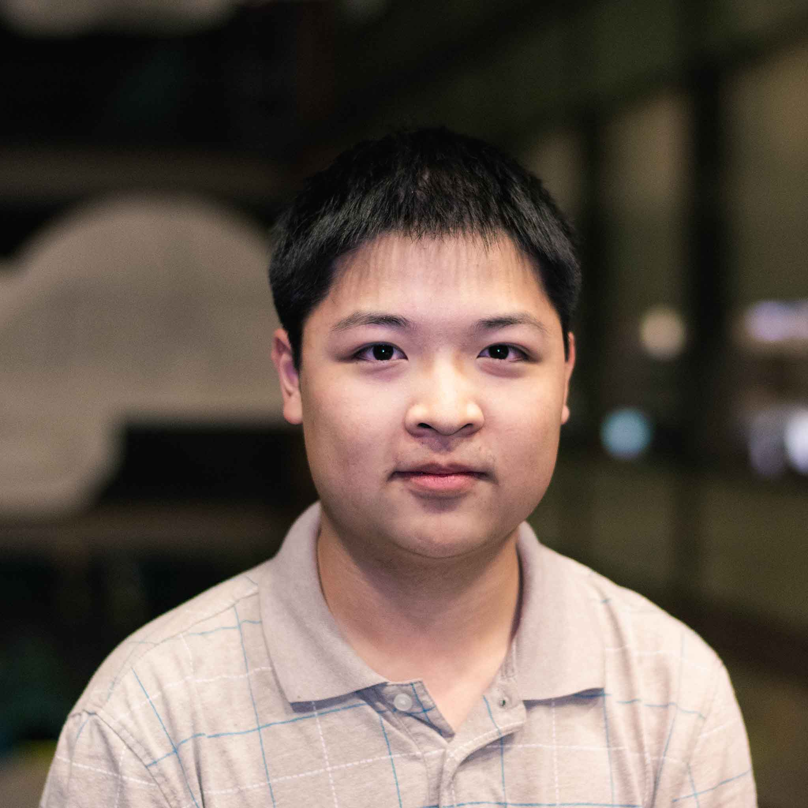Yusha Sun '202018 Chemistry DirectorYusha is a junior in the Physics department. He is from College Station, TX, where he competed in Science Olympiad throughout all of high school. In 2016, he was one of the 20 USNCO study campers. Besides Science Olympiad, he enjoys playing piano, thinking of puns, and synthesizing colorful compounds. Last year, he supervised the Forensics event at the 2016 Princeton University Invitational. This year, he's excited to help make Princeton Science Olympiad an amazing experience for all!
-
 Bill Huang '192018 Earth Science DirectorBill is currently a senior majoring in Mathematics, but knows a surprising amount of Earth Science. He is still salty (and probably will always be) about choking Experimental Design at states, but still has plenty of fond memories (and lots of medals) from his years of Science Olympiad with West Windsor-Plainsboro High School South. If he's running your event, chances are the test will be rather difficult, so be prepared :) In his free time, he enjoys swimming (which comes with great pregames) and playing piano, but usually ends up wasting all of it on Steam. Last year, Bill was the event supervisor for Astronomy.
Bill Huang '192018 Earth Science DirectorBill is currently a senior majoring in Mathematics, but knows a surprising amount of Earth Science. He is still salty (and probably will always be) about choking Experimental Design at states, but still has plenty of fond memories (and lots of medals) from his years of Science Olympiad with West Windsor-Plainsboro High School South. If he's running your event, chances are the test will be rather difficult, so be prepared :) In his free time, he enjoys swimming (which comes with great pregames) and playing piano, but usually ends up wasting all of it on Steam. Last year, Bill was the event supervisor for Astronomy.
Event Supervisors
The event supervisors are volunteers who have dedicated their time to write high-quality tests for their events. Thank you to them all!
-
 Matthew Jeon '22Rocks and MineralsSouth Brunswick High School
Matthew Jeon '22Rocks and MineralsSouth Brunswick High School
-
 Papa Johns '33DoughnutsThe Pizza Academy
Papa Johns '33DoughnutsThe Pizza Academy
-
 Hoover Dam '44HydroGeorgia State
Hoover Dam '44HydroGeorgia State
-
 Max Million '55NutsMy home
Max Million '55NutsMy home